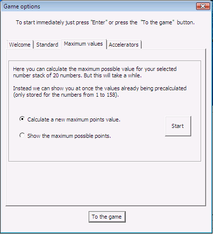

The idea for the Number Shark game comes from Mr. Lothar Carl, who created the original version of the game in Delphi. The Number Shark game is used to improve and to train the knowledge of factors and prime numbers in grades six to ten.
The original program from Mr. Carl was freeware, but not open source:
http://www.learn-line.nrw.de/angebote/neuemedien/medio/mathe/coalgebr/zahlhai/hai01.htm
You can find the maximum amount of points possible for numbers up to n=50 on Mr. Carl's site. However, these values were created while playing, so the results are subject to change (the last change dates back to 10/12/2000).
Mr. Carl kindly allowed us to use his ideas and the name for a new implementation. The following picture shows the original version of the Number Shark (German version):

The new version of the Number Shark is freeware and open source.
In the English speaking world this game idea is called "tax man" significantly.
The site http://www.research.att.com/~njas/sequences/A019312 within ATT Integer Sequences contains the maximum amount of points possible up to n=158. The sequence can be displayed there graphically, too. Meanwhile, for each n the ideal way is stated too in the notes (thanks to Dan Hoey). A formula for the ideal value is not known as of now, though.
For big values of n, all known methods to calculate the ideal way need very long. The new JavaCrypTool contains heuristic methods that find good - but not necessarily ideal - ways. These methods are very fast.
(Status February 2010)
1. Learning to program
Within the first year of the apprenticeship as an IT specialist, the idea of Mr. Carl was chosen as a sample to teach programming skills in C++ and to expand them by upgrading the program step by step.
At first the Number Shark procedure was implemented as a console program (Console programs can only do text in- and output. They are started from a command line: You can find the command line in Windows via: Start \ Programs \ Accessroies \ Command Prompt). The command line version of the program was only developed in German.
After the logic for the algorithm was implemented, we created a graphical user interface.
After that, the program was continually expanded: The first add-on was to give the player the possibility to play with more than 50 numbers (this was the maximum in the original game of Mr. Carl). In order to do this we created a tab control on which 30 buttons are placed. These buttons change their value and label depending on which tab you choose.
Now you can play with maximum 9999 numbers. This border is set in the source code because the current buttons are not wide enough for bigger numbers and it would make no sense to play with a higher number because it will get too difficult to know all numbers and all factors.
The game dialog and all parts of it have a fixed size. We would have liked to make the size of the dialog variable, but unfortunately the resource editors in Visual C++ 6.0 and Visual C++ 7.1 (Visual Studio 2003) don't give us the possibility of the so called "docking" of graphical elements onto the dialog windows. The width of the columns in the game progress list can be changed in their width, so that the player can see all points that the Number Shark was awarded in every round. If the new content is broader then the current column, the width will not be adjusted automatically. To make the size scalable would be a good task for a future version using the Windows 7 graphics engine WPF (see TODO #16).

2. Maximum possible points
During the test phase, we asked ourselves how many points a player can score. To answer this question, a function which calculates the maximum possible score was written. After pressing the Start button in the "Game options" dialog (flag "Maximum score"), you can choose from two different algorithms:
Brute-force algorithm: This algorithm calculates every possible move order and compares the achieved scores (brute-force).
Back-tracking algorithm: This algorithm is using trial and error to assemble partial solutions to a wholistic solution. You can find further information on backtracking here.
After choosing the algorithm, you get:

Because this calculation takes a long time, the player is asked by the program before the calculation starts.


Remark:
The maximum possible points are already available for numbers from 1 to 158 and are saved in the file "GameData.txt", so that they don't need to be calculated again and can be displayed right away.

And the program can show you one optimal way to achieve this score. (i.e. in which way you should take the numbers)

3. Stop and restart the calculation
Because calculating the highest possible score for bigger numbers lasted very long with our brute-force algorithm, we had to find a way to stop and restart the calculation because the PC may have to be used for other work or may have a power breakdown. Therefore, intermediate results are saved in a document in short time intervals. The file "NumberSharkSearch[amount of numbers] is created in the same folder as the Number Shark executable and can be opened with a normal text editor.

When you start a new calculation the program first looks if an intermediate result for this number already exists. If yes, then the calculation starts at the same position where the former one stopped. Even without any knowledge of the content of this file or how the calculation works, you can, if you have a fast PC with a lot of idle time, calculate new values on your own.
For numbers > 158 we need your help: see Challenge. We have precalculated and saved the maximum possible points, and one of the best ways to get these points for numbers < 158 in our program. If you reach the highest possible score and an optimal way with numbers > 158 then we would be pleased if you could send us your results to esslinger@fb5.uni-siegen.de.
4. Program control
a) Choose a number in the shell square
To increase the usability in the program, we added a keyboard control. Now you can move over the shells and the tabs with the arrow keys (left, right, up, down). In previous versions you could only use the left and right arrow key, the tab key and the space bar to activate the buttons. Now you can select the shells with the Enter- or the Space Button.
b) Undo and redo the rounds you played
The Number Shark game has a feature to undo  your previous played rounds if you want to choose another number. And you can redo
your previous played rounds if you want to choose another number. And you can redo  these steps as long as you change nothing in the course of the game.
these steps as long as you change nothing in the course of the game.
5. Tests
In addition to some colleagues from the branch and some apprentices, there were also users on the internet involved in testing the game. Some of the suggestions that we received because of these tests were the tool tips, the keyboard control and stopping and restarting of the calculation.
6. Visual appearance
To make the program look more like a game and less like a normal office application we needed to change the visual appearance of the game. The first step was to change the look of the buttons in the shell square. To realize this, we created a picture of a shell for every condition of a button (pressed, activated, has focus, deactivated) and placed it over the button. The buttons are transparent, to make the buttons look like the borders of the shell are the borders of the buttons.
Whenever you want you can switch between the normal button and the shell button look by pressing SHIFT+ALT+C on your keyboard. This will make the shells in the shell square visible or invisible.
Different pictures of a shark were added to the dialog, and every time you press the New gamebutton the picture changes.
Then the normal tool tips were replaced by so called balloon tips.
Other visual changes are the different colors on the game progress list and a LED display which shows you the scores and the end results.
The options were split on the sliders Welcome, Standard and Maximum score, so that different types of options are separated. Later, you'll be able to chose colors for the table and the fonts via the slider Colors which is similar to MS Paint (see TODO #5).
The design of the buttons in the numbers stack, the LED display and the colored course of the game were realized with the help of source code examples from the users of the website http://www.codeproject.com.
After the game dialog was finished we realized that the game was too big for smaller pc screens and resolutions. To solve this problem we decided to create a new, smaller, game dialog. In this dialog you can only see 20 button shells at one time and the game progress list was shortened.
7. TODOs - How the program can be improved
Of course the program is not completed yet. More ideas are:
You can find general information about the interface here, hints for the game are available here.
By legal reasons we explicitly have to point at the terms of license and the information regarding non-liability.